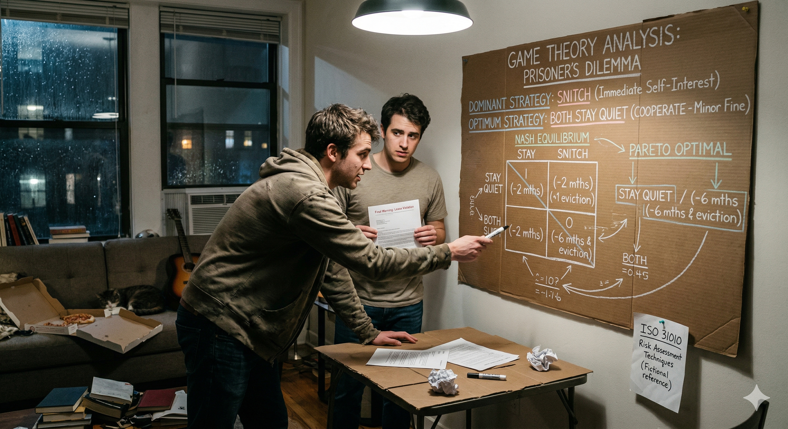

FADE IN: A cramped apartment. Pizza boxes and textbooks everywhere. OMAR (20s, pre-law student, thinks three moves ahead) sits at the kitchen table. His roommate KYLE (20s, impulsive, panicking) bursts through the door. KYLE We're screwed. Landlord found out about the dog. And the sublet. And the wall we knocked down. OMAR (calm) I know. He called me too. Sit down. KYLE He said whoever tells him the full story first gets to keep the lease. The other one gets evicted AND sued for damages. OMAR (nodding slowly) He's running the Prisoner's Dilemma on us. And he's counting on us being stupid.
Omar clears the table and grabs a notebook. OMAR Let me show you something. This is a payoff matrix. It's the foundation of game theory. He draws a 2x2 grid. OMAR (CONT'D) Two players: you and me. Two strategies each: Stay Quiet or Snitch. Four possible outcomes. He fills in the grid: OMAR (V.O.) If we BOTH stay quiet: Landlord has no proof. Minor fine, we both keep the lease. Call it negative 500 each. If I snitch and you stay quiet: I keep the lease, you get evicted and sued. I get zero, you get negative 5,000. If you snitch and I stay quiet: You get zero, I get negative 5,000. If we BOTH snitch: Landlord has full info, evicts us both but with reduced penalties since we cooperated. Negative 2,000 each. KYLE (staring at the grid) So the best outcome is if we both shut up.
OMAR You'd think so. But here's the trap. Look at it from YOUR perspective only. He highlights Kyle's column. OMAR (CONT'D) If I stay quiet, your best move is to snitch. You get zero instead of negative 500. If I snitch, your best move is STILL to snitch. You get negative 2,000 instead of negative 5,000. KYLE So snitching is always better for me? OMAR That's called a Dominant Strategy. No matter what I do, snitching gives you a better individual outcome. And guess what? The same logic applies to me. My dominant strategy is also to snitch. KYLE So we both snitch? OMAR If we both follow our dominant strategies, we both snitch and we both get negative 2,000. But if we'd both stayed quiet, we'd only lose 500 each. The "rational" individual choice leads to a WORSE collective outcome. That's the dilemma.
OMAR The outcome where we both snitch? That's called the Nash Equilibrium. Named after John Nash — the Beautiful Mind guy. KYLE What makes it an equilibrium? OMAR It's the outcome where neither player can improve their position by changing strategy alone. If we're both snitching and I switch to staying quiet, I go from negative 2,000 to negative 5,000. Worse. Same for you. So neither of us has an incentive to deviate. He circles the both-snitch cell. OMAR (CONT'D) The Nash Equilibrium is STABLE, but it's not OPTIMAL. The both-quiet outcome is better for everyone, but it's not stable — because each of us is tempted to defect. KYLE That's messed up. OMAR That's math. Individual rationality and collective rationality are different things. Game theory shows you exactly where they diverge.
KYLE So what do we do? Just accept the bad outcome? OMAR No. We change the game. See, the classic Prisoner's Dilemma assumes a ONE-SHOT game. You play once, never see each other again. In that case, snitching is rational. KYLE But we live together. OMAR Exactly. This isn't one-shot. This is a REPEATED game. We're gonna deal with this landlord — or the next one — for years. And in repeated games, cooperation becomes the optimal strategy. He writes on the notebook: OMAR (V.O.) One-shot game: Snitch (dominant strategy) Repeated game: Cooperate (optimal long-term strategy) OMAR (CONT'D) In a repeated game, I can punish you for snitching in future rounds. And you can punish me. That threat of retaliation changes the math entirely.
OMAR The best strategy for repeated games was discovered by a political scientist named Robert Axelrod. It's called Tit for Tat. KYLE Sounds aggressive. OMAR It's actually the opposite. The rules are simple: Start by cooperating. Then, in every subsequent round, do whatever the other player did last round. If they cooperated, you cooperate. If they defected, you defect. Then forgive and go back to cooperating if they do. KYLE So it's... nice but not a pushover? OMAR Exactly. It's nice — it starts with cooperation. It's retaliatory — it punishes defection immediately. It's forgiving — it returns to cooperation as soon as the other player does. And it's clear — the other player always knows what to expect. He taps the notebook. OMAR (CONT'D) In Axelrod's tournament, Tit for Tat beat every other strategy. The simplest approach won because it built trust while maintaining deterrence.
KYLE Okay but how do I KNOW you won't snitch? You just showed me it's in your self-interest. OMAR Fair. That's the trust problem. In game theory, you solve it with a Commitment Device — something that makes defection costly for me, so you can trust my cooperation. KYLE Like what? OMAR Like this. I'm going to text you right now: "I, Omar, confirm that we both agreed to stay quiet about the lease violations." Screenshot it. KYLE Why? OMAR Because if I snitch to the landlord after sending that text, you've got proof I was involved too. My snitch loses its value because I've implicated myself. I've made my own defection costly. That's a credible commitment. He sends the text. Kyle's phone buzzes. OMAR (CONT'D) Now we're not relying on trust. We're relying on aligned incentives. That's stronger.
KYLE Wait — what about the landlord? He's a player too. OMAR (impressed) Now you're thinking in multi-player games. Yes. The landlord designed this situation deliberately. He's using a mechanism called "divide and conquer." By offering a deal to the first snitch, he's trying to break our coalition. He adds the landlord to the diagram. OMAR (CONT'D) His optimal outcome: one of us snitches, he gets full information, evicts the guilty party, and keeps the other as a grateful tenant who'll never break rules again. His worst outcome: we both stay quiet and he has to actually investigate, which costs him time and money. KYLE So our silence is actually expensive for HIM? OMAR Very. If we both stay quiet, his expected cost of investigation is maybe $2,000 in legal fees and time. If one of us snitches, his cost drops to zero. He's trying to externalize his investigation costs onto our relationship.
OMAR So here's our counter-strategy. We both stay quiet. But we don't just stonewall — we go to him together with a unified front. KYLE And say what? OMAR We acknowledge the violations. We offer to fix the wall, re-home the dog, and end the sublet. We present a remediation plan. This changes the game from adversarial to cooperative. He redraws the payoff matrix with the new option. OMAR (CONT'D) New outcome: Landlord gets his problems fixed at zero cost to him. We keep the lease with a warning. Maybe a small fine. Call it negative 800 each — better than any outcome in the original matrix except the one where we snitch on each other. KYLE And the landlord goes for this because... OMAR Because finding new tenants costs him two months of vacancy plus turnover costs. About $4,000. Our remediation plan saves him money. We've turned a zero-sum game into a positive-sum game. Everyone wins.
Kyle sits back, looking at the notebook full of matrices and strategies. KYLE So the whole time, the answer wasn't about snitching or not snitching. It was about changing the game. OMAR (smiling) That's the deepest lesson in game theory. If the game has a bad equilibrium, don't play the game. Change the rules, change the players, change the payoffs. Redesign the incentive structure. He closes the notebook. OMAR (CONT'D) ISO 31010, Section B.9.4. Game Theory. They use it in nuclear deterrence, auction design, and antitrust law. We just used it to save our apartment. KYLE I'm switching my major to econ. OMAR (laughing) Start with the payoff matrix. Everything else is just footnotes. Omar picks up his phone and dials the landlord. Kyle sits beside him, united front. The camera pulls back as we hear Omar's calm, strategic voice begin the negotiation. FADE OUT. — END —